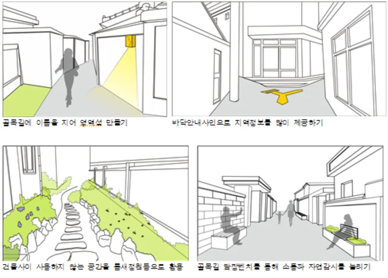

같은 글의 다른 판본을 읽고 있습니다. 기본 수록본으로 돌아가기 →
원고·기고 / 049
수원시 안전 골목 만들기 10원칙
|
“수원시 안전 골목 만들기 10원칙” 누구나 쉽게 이해하고 적용할 수 있는 가이드제시 |
|
 |
최근 우리 사회에서는 안전에 대한 필요성이 대두되고 중앙정부 및 각 지자체마다 안전 마련대책을 마련하게 되면서 안전 마을 만들기, 범죄예방디자인, 안전디자인 가이드라인 등 다양한 사업들이 운영되고 있다. 이를 위해 수원시에서는 누구나 쉽게 이해하고 적용할 수 있는 ‘안전한 골목만들기 10원칙’이라는 핸드북 형식의 보기 쉬운 디자인 가이드라인을 만들었다. 사회가 당면한 여러 과제를 풀기 위해서는 방법론으로서 디자인의 과정이 초기에 투입되어야 하며, 그 과정에서 사용자들의 이해와 참여 그리고 공유는 실질적인 해결을 위한 매우 중요한 요소이다. 수원시가 진행한 보기 쉬운 가이드라인은 사용자인 주민의 이해도를 높이고 자연스러운 참여 유도와 인식향상은 안전 골목을 만드는 과정에서의 디자인의 역할 확대를 보여주는 사례이며, 공공디자인이 여러 사회 문제를 풀어가야 할 하나의 접근 방법을 보여주고 있다. |
(자료제공 : 장진우 수원시청 도시디자인팀장 |


기록기반 추가 복구 텍스트 — 위치 대조 필요
Section0/paragraph-0012/record-4424
(자료제공 : 장진우 수원시청 도시디자인팀장 jjang2044@korea.kr)
이 글의 판본과 수록 정보 ＋
집필 폴더의 자료; 실제 작성자·집필 기여 미확정
파이낸셜 기고 관련 여러 제목·수정 판본을 연결.
- 수록 자료
- 02 1_파이낸셜뉴스 기고_수원시 안전디자인 10원칙.hwp
- 자료의 날짜 단서
- 기록 없음 · 실제 발표일과 다를 수 있습니다.
- 관련 파일
- 4개 / 서로 다른 본문 4종